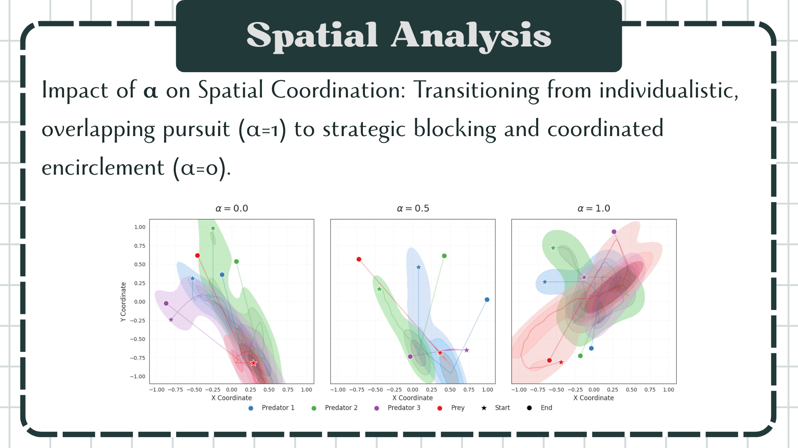
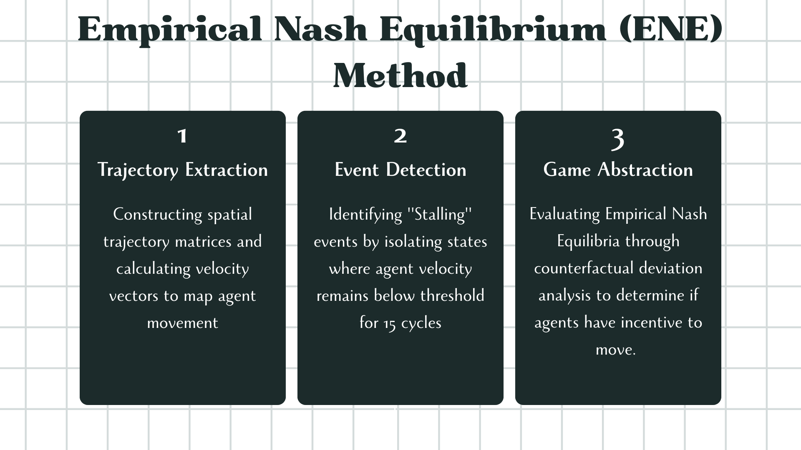

Abstract
This project investigates the discrepancy between theoretical stability and empirical outcomes in Multi-Agent Reinforcement Learning (MARL). It addresses 'stalling', a strategic paralysis, by examining how reward redistribution influences coordination in mixed environments. The methodology utilizes a Cooperation Factor to weight individual versus team-based incentives. Additionally, an Empirical Nash Equilibrium (ENE) framework is proposed, employing counterfactual deviations to evaluate whether observed behaviors constitute true game-theoretic equilibria.
Research Questions
- RQ1: How does shifting the reward mechanism influence cooperation in a competitive environment?
- RQ2: To what extent does the observed 'stalling' behavior constitute a true game-theoretic equilibrium?

Experimental Environment: Simple Tag Scenario

First Research Question - Spatial Analysis

Second Research Question Methodology